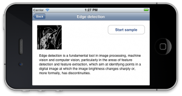
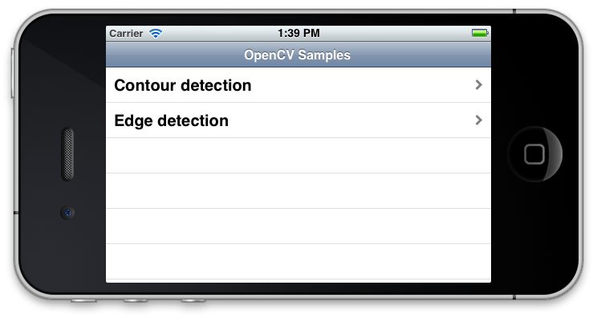
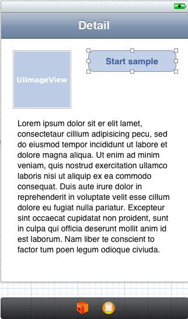

OpenCV Tutorial - Part 2

In the previous step we created Master-Detail XCode project and linked OpenCV library to it. Also we defined a base interface for all samples. Today we’ll write some UI logic to integrate our samples into the application.
One ring to rule them all
Since we are going to store a lot of samples (i hope so), we have to store them somewhere. I think for our application the ideal place to save them is our application delegate class. Since we create instance of each sample only once at startup and they required to be alive for all application lifecycle there is no better place to store them:
@interface AppDelegate : UIResponder
{
@public
std::vector allSamples;
}
@property (strong, nonatomic) UIWindow *window;
@end
We initialize vector of samples at application startup point like that:
- (BOOL)application:(UIApplication *)application didFinishLaunchingWithOptions:(NSDictionary *)launchOptions
{
allSamples.push_back( new ContourDetectionSample() );
allSamples.push_back( new EdgeDetectionSample());
// Add a lot of other samples here ...
// Override point for customization after application launch.
if ([[UIDevice currentDevice] userInterfaceIdiom] == UIUserInterfaceIdiomPad)
{
UISplitViewController *splitViewController = (UISplitViewController *)self.window.rootViewController;
UINavigationController *navigationController = [splitViewController.viewControllers lastObject];
splitViewController.delegate = (id)navigationController.topViewController;
}
return YES;
}
To access our sample collection we will use following snippet:
AppDelegate * appDel = [UIApplication sharedApplication].delegate;
appDel->allSamples;
Displaying samples in master view
We use table view to display a list of sample titles. Table view controller allows us to control process of databinding by overriding few methods:
- (NSInteger)numberOfSectionsInTableView:(UITableView *)tableView
{
return 1;
}
- (NSInteger)tableView:(UITableView *)tableView numberOfRowsInSection:(NSInteger)section
{
AppDelegate * appDel = [UIApplication sharedApplication].delegate;
return appDel->allSamples.size();
}
- (UITableViewCell *)tableView:(UITableView *)tableView cellForRowAtIndexPath:(NSIndexPath *)indexPath
{
AppDelegate * appDel = [UIApplication sharedApplication].delegate;
SampleBase * sample = appDel->allSamples[indexPath.row];
UITableViewCell *cell = [tableView dequeueReusableCellWithIdentifier:@"Cell"];
std::string sampleName = sample->getName();
cell.textLabel.text = [NSString stringWithCString:sampleName.c_str() encoding:NSASCIIStringEncoding];
return cell;
}
- (BOOL)tableView:(UITableView *)tableView canEditRowAtIndexPath:(NSIndexPath *)indexPath
{
// Return NO if you do not want the specified item to be editable.
return NO;
}
This will give us following look of the master view:  Now we have to tell application how to react when user taps on particular sample. When this happes application should navigate to detail view and show sample detailed description, it’s icon and “Run Sample” button. To do this we override following selection callbacks:
- (void)tableView:(UITableView *)tableView didSelectRowAtIndexPath:(NSIndexPath *)indexPath
{
if ([[UIDevice currentDevice] userInterfaceIdiom] == UIUserInterfaceIdiomPad)
{
AppDelegate * appDel = [UIApplication sharedApplication].delegate;
SampleBase * sample = appDel->allSamples[indexPath.row];
[self.detailViewController setDetailItem:sample];
}
}
- (void)prepareForSegue:(UIStoryboardSegue *)segue sender:(id)sender
{
if ([[segue identifier] isEqualToString:@"showDetail"])
{
NSIndexPath *indexPath = [self.tableView indexPathForSelectedRow];
AppDelegate * appDel = [UIApplication sharedApplication].delegate;
SampleBase * sample = appDel->allSamples[indexPath.row];
[[segue destinationViewController] setDetailItem:sample];
}
}
In these methods we initialize detail view with instance of selected sample and present it. Two different methods is necessary since our application supports both iPhone and iPad devices, so we have to support both idioms.
Displaying sample in detail view

The detail view has large text view to present sample description text, also it shows sample icon and a “Run Sample” button that starts this sample. The DetailViewController updates content of this view with the given sample using the configureView method, which is called when the sample is selected in master view. Each sample can have it’s own icon image (150x150 pixels for iPhone and 300x300 for iPad). To make our app look like a pro we add this feature since no one loves text without illustrations.
When a DetailViewController is shown it update it’s state with a corresponding sample object using following method:
- (void)configureView
{
// Update the user interface for the detail item.
if (currentSample)
{
std::string name = currentSample->getName();
std::string desc = currentSample->getDescription();
std::string icon = currentSample->getSampleIcon();
NSString * nameStr = [NSString stringWithCString:desc.c_str() encoding:NSASCIIStringEncoding];
NSString * descStr = [NSString stringWithCString:name.c_str() encoding:NSASCIIStringEncoding];
self.sampleDescriptionTextView.text = descStr;
self.title = nameStr;
if (!icon.empty())
{
NSString * iconStr = [NSString stringWithCString:icon.c_str() encoding:NSASCIIStringEncoding];
self.sampleIconView.image = [UIImage imageNamed:iconStr];
}
else
{
self.sampleIconView.image = nil;
}
}
}
The “Run Sample” button will launch this sample, but now it does nothing since we haven’t wrote any image processing code. In the next part we create a SampleViewController to present results of image processing and write our first sample - Edge Detection demonstration.
Let me stop right now and wish you good luck with studying OpenCV and iOS development. You can find project sources at OpenCV Tutorial repository on GitHub.